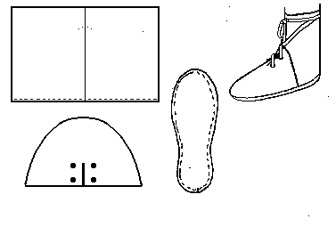

A commoner's shoe found in
Castles and may not be based on anything but whim. Made with a rand or a full welt.
The basic design is MY estimate of the pattern, and may not be absolutely accurate.
Return to
[Middle Ages Index]
[High Middle Ages Index] or
[Next]
Footwear of the Middle Ages - Historical Shoe Designs/Number 53, by I. Marc Carlson. Copyright 1996
This page is given for the free exchange of information, provided the Author's Name is included in all future revisions, and no money change hands, other than as expressed in the Copyright Page.